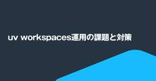
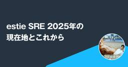
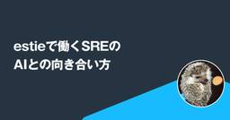
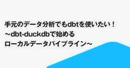

estie inside blog
https://www.estie.jp/blog/
estie inside blog
フィード

uv workspaces運用の課題と対策
estie inside blog
こんにちは。Data Management Group（以下DMG）の宮崎です。主にデータパイプライン開発やWebサーバサイド開発に携わりつつ、CIやデータ基盤の改善にも取り組んでいます。 estieはRustの活用が目立つ会社ですが、DMGではPythonの利用シーンも多いです。今回はDMGでのPython活用状況をお伝えすることも兼ねて、uvのworkspaces機能について書いていきたいと思います。 この記事で言いたいこと 伝えたいことに対して前振りが長くなってしまったので、先に結論を書きますと 「uv workspaces使うならパッケージごとの依存関係漏れを検知する仕組みもセットで考…
26分前

estie SRE 2025年の現在地とこれから 1
1
estie inside blog
estie SRE の sugitak (X: @sugitak06 ) です。2022年8月に1人目専任 SRE として入社してそろそろ3年経ち、 SRE として求められるものもずいぶん変わってきました。このブログでは、 estie SRE の現在地をご紹介したいと思います。 estie の不動産領域と SRE ひとことで言うと、 estie は不動産 B2B の事業を行う会社です。 商業用不動産の世界では、投資や運用に欠かせない「情報」を得る手段が限られています。私たちが提供するプロダクトでは、不動産業界全体の活動を効率的に行えるようにするために、世の中に出ていないデータを顧客に提供してい…
3日前

estieで働くSREのAIとの向き合い方
estie inside blog
SRE × AI おはようございます。tokuharaです。 estie で SRE とか Platform Engineeringをしてます。 日常業務にAIが当たり前のように入ってきてますね。設計の壁打ちや、集めた資料を丸投げして整理してもらうことから、コーディング作業と多岐にわたる範囲でAIと併走して働くことが増えてきました。実際ここ数ヶ月、自分はAIに書いてもらうコードの方が自分で書くより多くなっています。 これから立ち上げるプロダクトやスタートアップといった企業自体も、AIを前提にしたものになってくるでしょうし、ビジネスや、組織の形もAIネイティブ化され、面白そうな時代が当面続きそう…
4日前

手元のデータ分析でも dbt を使いたい！〜dbt-duckdb で始めるローカルデータパイプライン〜
estie inside blog
こんにちは！スタッフエンジニアの @kenkoooo です。相変わらず estie を平均年収2000万円の会社にしようと頑張ってます。引き続きやっていきます。 Snowflake x dbt 中毒 estie のビジネス上、estie にしか無いデータを作ることが非常に重要で、データパイプラインの構築に力を入れています。データパイプラインは dbt で作られており、Snowflake 上でデータがガンガン流れていきます。 データ加工パイプラインに用いる dbt 株式会社estieでのSnowflake活用事例 億単位の住宅データを AWS + Snowflake で分散処理する - esti…
6日前
やりたい事を、好きなだけやれる環境はestieだった
estie inside blog
【プロフィール】伊藤 翔 愛知大学卒業後、2022年に新卒で株式会社オープンハウスへ入社。営業本部にて路上のチラシ配りからマネージャーまで経験したのち、2025年4月よりestieに参画。 インサイドセールス１人目として立ち上げを担当。 趣味はサウナ、観光、読書。サウナは多いときは週5で行く 最近は脱出ゲームとお化け屋敷にハマっている。 これまでのキャリアを教えてください 愛知の大学を卒業した後、新卒で株式会社オープンハウスに入社しました。福岡に配属が決まり、宅建試験を終えた大学4年の10月から福岡に移りホテル暮らしをしながらインターンとして働き、そのまま入社し約3年間不動産仲介営業として、新…
7日前

【estie inside FM】2025年5月公開エピソードまとめ
estie inside blog
株式会社estieが送るポッドキャスト番組「estie inside FM」。2025年1月から開始し、毎週金曜日に新しいエピソードをお届けしています。 各回のエピソードには、ユニークなゲストを迎え、estieの取り組みや個性的なメンバー、そして不動産業界のトレンドについてお届けしております。 今回は、2025年5月に更新した、5つのエピソードをご紹介します！まだ聴いていなかったエピソードや、気になるエピソードがあれば、ぜひご一聴ください。 16 創業を決意した恩師のスピーチと6年の振り返り【代表取締役 平井 × 執行役員 山本 】 16回目のエピソードでは、estie代表取締役の平井がゲスト…
11日前
なぜウェブアプリ開発に Rust を使うのか
estie inside blog
こんにちは！スタッフエンジニアの @kenkoooo です。入社してから早いもので3年が経過しました。相変わらず平均年収2000万円を目指してやっていますが、まだ道半ばです。引き続き頑張ります。 estie は10を超えるウェブサービスを提供していますが、フロントエンドは Next.js で統一され、バックエンドは大半が Rust という構成になっています。また、バックエンドが裏側で叩いているマイクロサービスも大半が Rust で実装されています。 Rust を使っている会社は増えてきつつあるかと思いますが、ここまでどっぷり Rust にベットしている会社は多くないのではないかと思います。この…
12日前
QAエンジニアってどんな働き方をしているの？ estieのQAチームに聞いてみた！
estie inside blog
初めに こんにちは！estieでQAエンジニアとして働いている山本（yamachan）です。 estieのQAエンジニア職に興味を持たれている方に向けて、「estieのQAエンジニアってどんな働き方をしているの？」という疑問に答えるブログをお届けします。 今回はQAチームの3人で、Q&A形式で実際の働き方を紹介していきます。 QAメンバーの紹介 山本 龍平（yamachan） 慶應義塾大学を卒業後、2022年に新卒でソフトウェアテストを専門とするメガベンチャーに入社。 QAエンジニア、プロジェクトリーダーを経験したのち、2025年2月よりestieに参画。 村上 槙（murashi） 福岡県出…
13日前
QA チームのテストを活用した SLI を ECS on EC2 で動かした話
estie inside blog
こんにちは、 estie SRE の sugitak です。デプロイが好きで、最近は SLO と向き合っています。気になる不動産ニュースはアンドパッドさんの三田移転です。 先日アンドパッドさんの会場をお借りし、ゆるSRE勉強会#9 にて発表をさせて頂いたので、その内容を紹介します。 QA チームのテストを活用した SLI を ECS on EC2 で動かした話/SLI on ECS on EC2 using QA Playwright E2E test - Speaker Deck こちらは概ね二部制の内容となりました。 第一部 SLO は「ベストプラクティス」 Service Level A…
14日前
母校で高校生向けにestieについて説明してみた
estie inside blog
はじめに こんにちは。estieでプロダクトマネージャー（PM）をしている三橋です。 つい先日、なんと約20年ぶりに高校時代の恩師からご連絡をいただき、「うちの高校2年生に向けて、進路の参考になるような話をしてもらえないか？」というお誘いを受けました。懐かしさと嬉しさが入り混じる中、母校で講演するという、なんとも不思議なご縁をいただきました。 講演の準備を進める中で、ふと社内のメンバーを思い返してみると……あれ？estieって、私を含めて同じ高校の卒業生が4人もいる！しかも、社員数100人程度の若いスタートアップなのに！これはもはや「偶然」というより「何かある」としか思えない、ちょっとした奇跡…
14日前
一次情報にたどり着くまでの設計図～PMが担うべき顧客接点マネジメント～
estie inside blog
こんにちは。estieで執行役員 VP of Productsを担っているkubotakuです。この記事は、estieのプロダクトマネージャーによるブログシリーズ「PM Blog Week」第4弾 最終日の記事です。 ▼先日までの記事はこちら はじめに 6月24日(火)に「新規事業 PdM vs Bizdev どっちが重要？ガチンコ対決」というテーマでイベントを開催します。今回のBlog Weekはこちらと連動して、「PMとBizDevの違い」や「これから求められるPM像はどんなものか」について一連のシリーズでお送りしております。 ほかのPMの記事も含めて良かったら是非読んでみてください。 さ…
17日前
PLGにおいてはPMはBizDevの役割を内包すべきである
estie inside blog
こんにちは。プロダクトマネージャーのyuiです。 この記事は、estieのプロダクトマネージャーによるブログシリーズ「PM Blog Week」第4弾 7日目の記事です。（過去の PM Blog Week の記事は こちら ） はじめに 6月24日(火)に「新規事業 PdM vs Bizdev どっちが重要？ガチンコ対決」というテーマでイベントを開催します。今回のBlog Weekはこちらと連動して、「PMとBizDevの違い」や「これから求められるPM像はどんなものか」について一連のシリーズでお送りしています。このイベントのテーマは新規事業ですが、私は現在estieでPLGを前提としたプロダ…
18日前
PjMとPMの両輪を回す
estie inside blog
はじめに この記事は、estieのプロダクトマネージャーによるブログシリーズ「PM Blog Week」第4週6日目の記事です。<<前回の記事 スタートアップにおけるPMのバランス感覚～スピードと深さの両立～ - estie inside blog>> こんにちは。estie PMの冨田です。6月のestie PM Meetupに向けたBlogシリーズをやっていきます！（昨年書いた記事「コンサルタントがシニアPMになるまでに感じた壁 - estie inside blog」も是非ご覧ください） さて、今回はPMが日々悩みがちなテーマ「プロダクト（以下、PRD）とプロジェクト（以下、PJ）の関係…
19日前
スタートアップにおけるPMのバランス感覚～スピードと深さの両立～
estie inside blog
はじめに こんにちは。estieでプロダクトマネージャー（PM）をしている三橋です。 このブログは「PM Blog Week」第4弾・5日目の記事であり、6月開催予定の estie PM Meetup に向けた連載の一部としてお届けしています。<<前回ブログはこちら>> estieに入社して約1年半。変わらず毎日ワクワクしながら仕事をしています。estieで働くことの魅力や楽しさをもっと多くの方に伝えたいので、ぜひカジュアル面談やPM Meetupで直接お話できれば嬉しいです。 今回は、最近ようやく一段落したプロジェクトを振り返る中で、「やっぱりこのチームの動き方、いいな」と改めて感じたことが…
20日前
生成AIが存在する今、PMに求められること
estie inside blog
こんにちは。データチームのPMを担当しているmattsunです。このブログは、6月の estie PM Meetup に向けたブログシリーズとなっており、「PM Blog Week」第4弾4日目のブログです。<<前回ブログはこちら>> もうすぐログラス社主催の「新規事業 PdM vs Bizdev どっちが重要？ガチンコ対決」が開催され、estieも登壇予定です。これを受けて生成AIがある今、PMに求められることは何だろうということを考えてみたいと思います。 生成AIとPM： みなさんは生成AIを業務で使っていますか？estieでは現場レベルで様々な職種が試行錯誤して使っています。 私は実際に…
21日前
ecspresso をさらに速く使うために --wait-until=deployed オプションを追加した話
estie inside blog
忙しい人向けの情報 ecspresso 2.5 から ecspresso deploy --wait-until=deployed オプションを使うとデプロイ短縮できるようになったよ！！ 自分たちの環境では最大で 3 分程度短くなる DRAINING 完了を待つか否かの差か。サービスの安定したリリースに問題なし estie では ecspresso を使っています こんにちは、 sugitak です。 estie で SRE をしております。 estie では ECS + Aurora RDS を基本の環境としていまして、その ECS の deploy にあたっては kayac/ecspres…
24日前
事業開発とプロダクトマネージャーは二人で一人
estie inside blog
こんにちは。PMと事業開発を担当している中村（ゆーぶん）です。このブログは、6月の estie PM Meetup に向けたブログシリーズとなっており、「PM Blog Week」第4弾 3日目のブログです。<<前回ブログはこちら>> 突然ですが、「CFOとCOOって、いいコンビだな」と思いませんか？ それぞれどういう責務があるかを整理してみると、 CFO（Chief Financial Officer）は、会社の未来を信じてくれる人からお金を集める人。資金調達をし、投資家や外部ステークホルダーに対して「この会社なら成長する」「このプロダクトなら伸びる」という約束と計画を提示することで資金調達…
24日前
PM vs BizDev論争に終止符を。フェーズで変わる役割と価値観の話
estie inside blog
こんにちは。プロダクトマネージャの齋藤 @shisaito です。 今回は「PMとBizDevの役割」について考えます。 この記事は第4回 PM Blog Weekの連載2日目です。初日は「新規事業開発において重要なのは PM と Bizdev どっちなのかで言うと…」の投稿でした。 先に宣伝となりますが、この記事は6月24日に開催予定のイベントに関連して、私の主張を書いてみました。PM vs BizDev論争に興味がある方は、ぜひイベントにご参加ください！ loglass-tech.connpass.com はじめに PMとBizDevの役割は何か？ どちらが事業を作るのか？役割分担はどうあ…
25日前
新規事業開発において重要なのは PM と Bizdev どっちなのかで言うと…
estie inside blog
こんにちは。estie PM の勝田です。このブログは、6月の estie PM Meetup に向けたブログシリーズとなっており「PM Blog Week」第 4弾 1日目のブログです。 今回はログラス社主催の「新規事業 PdM vs Bizdev どっちが重要？ガチンコ対決」に登壇するにあたってこのテーマで書いてみようと思います。 このイベントは、私の前職の後輩であり、現在はログラス社で VP of Product を担っている須加さんと一緒にイベントをやろうというところから始まったものなので非常に楽しみにしています。 前提整理 PM と Bizdev のどっちが重要かというテーマは可燃性…
1ヶ月前
inside FM #11 「不動産業界全体のデータ部門」を作る挑戦 ー書き起こし
estie inside blog
「産業の真価を、さらに拓く。」というパーパスを掲げ、不動産業界に特化したテクノロジーソリューションを提供するestie。共通のデータ基盤を元にしたコンパウンドサービスの根幹を支えるのが、膨大な不動産データを収集・整備・提供する「データマネジメント事業本部（DMG）」です。 estieのポッドキャスト「estie Inside FM」では、DMGの事業責任者である青木信が、DMGの役割や設立経緯、データカンパニーならではの挑戦と面白さについて語りました。今回はその内容を再構成してお届けします。 「データマネジメント事業本部（DMG）」3つの役割 束原: 青木さん、よろしくお願いします。まずは自己…
1ヶ月前
募集賃料クレンジングとオッカムの剃刀
estie inside blog
最近estieではHuman-in-the-loopに強く取り組んでおり、私もそのHumanとしてデータの修正を中心に貢献しています。 日本のオフィスの賃料は、いわゆる家賃と違ってあまり公開されていません。estieはestie マーケット調査というプロダクトを提供しており、このプロダクトはオフィスの賃料データの網羅性を強みの1つとしています。そのため、提供する賃料が正しい事もまた重要です。 estie マーケット調査では竣工年 v.s. 賃料（坪単価）の散布図のような可視化・分析機能も備えています。そのため異常値は目立ちますし、プロダクトの信頼性を損ねます。異常値を出さない仕組みもいくつかあ…
1ヶ月前
回しながら作るHuman-in-the-loop
estie inside blog
機械学習（ML）プロジェクトの成否を左右するのは 「最初にどれだけ完璧に作れるか」 ではなく、「どれだけ速く改善ループを回せるか」 だと思っています。特に専門性が高い領域では、アノテーションの外注コストやドメイン知識の壁から、“作る ↔ 直す” を高頻度で繰り返さないかぎり精度が頭打ちになりがちです。 Human-In-The-Loop は ”運用しながら育てる仕組み” であり、小さく作って改善を回していくことが最短ルートだと考えています。estieでの事例を元にご紹介します。 Step1: 初期モデル・ルールの構築 HITLの最初のステップは、完璧ではないが「それなりに使える」初期システムを…
1ヶ月前
Human-in-the-loop を不動産名寄せタスクで実践してみた
estie inside blog
こんにちは！株式会社 estie でデータエンジニアを担当している fukushima です。 普段は主に、不動産データの整備・解析プラットフォームを設計・開発し、さまざまな建物情報を結びつけ、顧客に価値を届けられる形に整える仕組みづくりを進めています。 具体的には、dbt を使ったデータパイプラインの構築からメンテナンス、パイプライン周辺の機械学習モデル・ダッシュボード開発などです。データ品質を上げるためにできることに幅広く取り組んでいくことをミッションとして日々働いています。 1. 現在取り組んでいるプロジェクトの課題 estie のデータパイプラインにおける重要なタスクとして、様々なデー…
1ヶ月前
Human-in-the-loop / AI時代の勝ち筋は「人と機械の協働による高精度データ生成」
estie inside blog
こんにちは、estieのデータチームでプロダクトマネージャーを務めるmattsunです。 本ブログはestieにおけるHuman in the loopの取り組みをお伝えするブログ連作の1投稿目となります。取り組みの目的や概況をお伝えできれば幸いです。 AI時代の競争優位はデータの生成力： estieは、創業以来一貫して不動産業界のためにデータを提供してきました。不動産という複雑で非構造な情報が多い領域において、私たちはデータの整備・構造化・活用に取り組んできました。 そして、AI利活用のハードルが劇的に下がった今、「入力されるデータの質」が事業成否を分ける時代が到来しています。高精度なデータ…
1ヶ月前
不動産AI Lab インターン1期生レポート
estie inside blog
自己紹介 木村 駿太（きむら しゅんた）【写真左】 埼玉県出身。東京大学大学院情報理工学系研究科で画像認識系の研究を行っている。 人と話すこと、サッカー観戦、季節のイベントが好き。 周 莎（しゅう さ）【写真中央】 神奈川県出身、2001年生まれ。東京大学情報理工学系研究科在籍。 佐藤 篤樹（さとう あつき）【写真右】 茨城県出身、2001年生まれ。東京大学大学院情報理工学系研究科でデータ構造の研究を行っている。 趣味は競技プログラミングとランニング。 はじめに 技術広報のhishikiです。estieでは1月に不動産AI Labを立ち上げ、AIエンジニアインターン1期生として3名の学生に参加…
1ヶ月前
デザインエンジニアMeetup #1 | イベントレポート
estie inside blog
2024年4月25日に「デザインエンジニアMeetup #1 」を開催しました！ デザインとエンジニアリングを横断して問題解決を行い、プロダクトのデリバリーやアイデア検証を高速に行う「デザインエンジニア」。この職種はまだ事例が少なく、業務やキャリアの実態が語られる機会は多くありません。そこで私たちestieは、現場の知見をオープンに持ち寄れる場として、Meetupを開催することにしました。 第1回のテーマは 「各社の役割や事例を大公開！」です。 株式会社estieのkkaruさん、株式会社カミナシのosuzuさん、株式会社プレイドのt32kさんにご登壇いただきました。 セッションとパネルディス…
1ヶ月前
メンバー全員がデータを活用する基盤を作る：データマネジメントプラットフォーム 渡邊さんへのインタビュー
estie inside blog
多くの企業がデータ活用の推進を目指す中で、estieでは「全社員がデータにアクセスし、自らの業務に活かす」という、一歩踏み込んだ環境づくりに本気で取り組んでいます。自らSQLを書くなど積極的にデータ基盤へアクセスし、データへの高い関心を持つメンバーと共に、建設的な対話を通して「本当に必要なもの」を追求する文化があります。 今回は、estieのデータマネジメントプラットフォーム (DMP) ユニットで活躍する渡邊さんにインタビューします。技術的な挑戦だけではない、estieならではの「データ基盤エンジニアとしての働きやすさ」はどこから生まれるのか？ 全社員でデータ活用に挑む現場と、そのやりがいに…
2ヶ月前
業界未経験でも、最速で成果を出してもらうために──ドメイン理解から始める立ち上がり戦略
estie inside blog
まずは、自己紹介 こんにちは、マーケットリサーチ事業本部 事業推進部の責任者佐々木です。estieに2022年5月に入社し、早3年弱が経とうとしています。 以前の自己紹介はこちら >> 夢中になれる奴が一番強い - estie inside blog 入社以来、多方面から「今、何やってるの？」と聞かれることが多く、広く色々なことを担当してきました。兼務も含めるとOps(※)の役割においては全てを経験してきたのでは？と思います。 そんな私の現在の役割は、「マーケットリサーチ事業本部 クライアントソリューション統括部 事業推進部 部長」です。 入社以来、色んなポジションを経験してきましたが、202…
2ヶ月前
estie、新卒採用を始めます ～日本の競争力向上のために～
estie inside blog
こんにちは。estie 執行役員 ピープル＆コミュニケーション本部長の山本 ( @AyakoYamamoto )です。 今日は、私たちにとって大きな節目となるご報告があります。 このたび、株式会社estieでは2027年卒（2026年度）より、新卒採用を開始することを決定しました。 www.estie.jp それに合わせて、8月に3days サマーインターンを開催します。 インターン概要 >> 3days サマーインターンエントリーページ 今日はこのインターンの概要ではなく、どのような想いで今新卒採用を始めるのか、estieとして新卒の皆様にどんな環境を提供できるのかについて書いていきたいと思…
2ヶ月前
【estie inside FM】2025年4月公開エピソードまとめ
estie inside blog
株式会社estieが送るポッドキャスト番組「estie inside FM」。2025年1月から開始し、毎週金曜日に新しいエピソードをお届けしています。 各回のエピソードには、ユニークなゲストを迎え、estieの取り組みや個性的なメンバー、そして不動産業界のトレンドについてお届けしております。 今回は、2025年4月に更新した、4つのエピソードをご紹介します！まだ聴いていなかったエピソードや、気になるエピソードがあれば、ぜひご一聴ください。 12 入社時は失敗するのが怖かった、そんなマインドから全社表彰に至るまで【マーケティング 志水 × 取締役 束原】 第12回のエピソードでは、estieの…
2ヶ月前